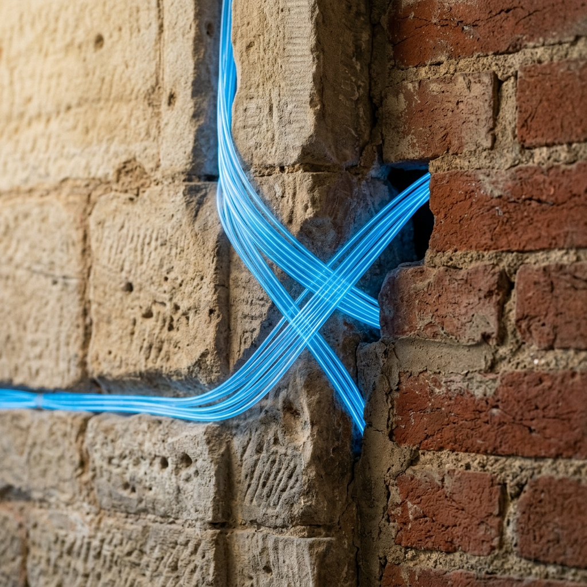
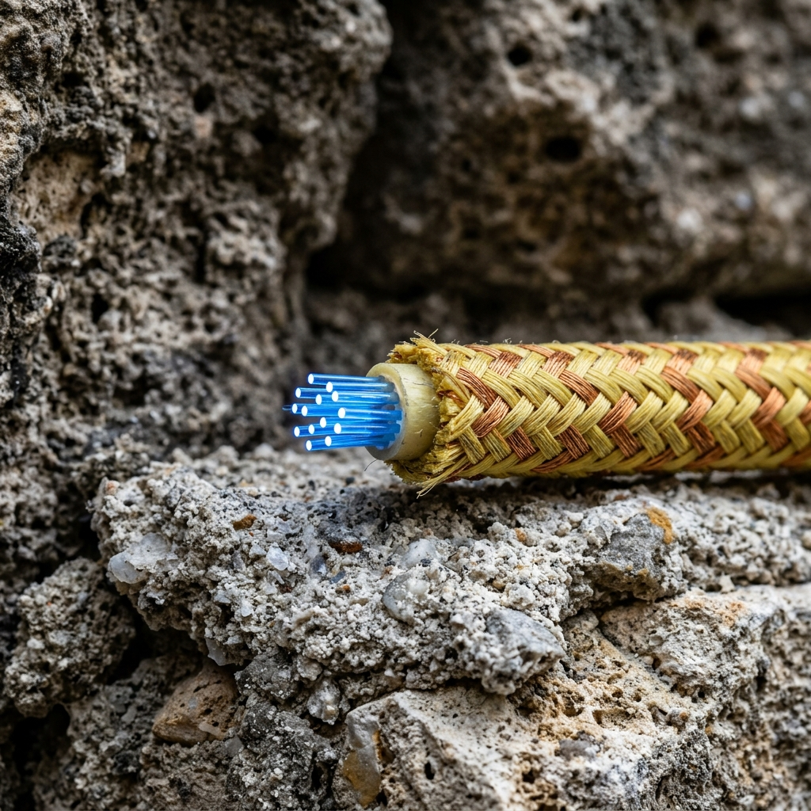

Invisible Gigabit Networks for Grade I Listed Architecture.
Deploying acoustic micro-drones to thread high-speed optical fibre through nineteenth-century infrastructure.
Lithic Fibre Dynamics resolves the critical tension between modern data demands and strict architectural conservation. Based in Edinburgh, we provide ten-gigabit connectivity to historic estates, museums, and municipal archives without drilling a single hole in protected masonry. By utilising abandoned Victorian gas lines, disused ventilation shafts, and original plumbing voids, our acoustic micro-drones navigate the hidden circulatory systems of your building to lay kevlar-protected fibre-optic cables in complete secrecy, preserving the integrity of every stone.

Zero-Impact Data Integration
Historic architecture in the United Kingdom was not designed to accommodate the sheer volume of cabling required by modern digital archives, high-definition security arrays, and guest networks. Traditional telecommunications contractors rely on aggressive core-drilling, surface-mounted plastic conduits, and the removal of original floorboards to establish network routes, actions strictly prohibited in Grade I and II listed structures. The Heritage Gigabit Retrofit bypasses these destructive methods entirely. We treat a historic building as a living organism, mapping its existing, disused infrastructural arteries to create non-invasive digital pathways. By threading our networks through the chimney flues, ash-drops, and speaking-tube networks installed centuries ago, we deliver enterprise-grade data speeds while leaving the visible historical fabric of the property entirely undisturbed.
Navigating the Victorian Labyrinth
Routing fragile glass fibres through a sprawling nineteenth-century estate requires unprecedented precision in impossibly confined spaces. We achieve this using our Acoustic Sub-Routing Swarm. These custom-engineered, forty-millimetre terrestrial micro-drones are deployed directly into existing structural voids. Equipped with high-frequency sonar emitters and infrared optics, the swarm crawls through decades of accumulated dust and soot, autonomously mapping a safe, continuous route from the basement server rack to the attic access points. Once a viable pathway is confirmed, a lead drone tows a high-tensile pilot filament through the maze, creating a frictionless guide for the primary optical cables. This robotic intervention eliminates the need for invasive exploratory masonry work, turning blind architectural dead-ends into high-speed data conduits.
Engineered for Hostile Architectural Voids
To safely traverse the hostile environments hidden behind historic plasterwork, standard commercial ethernet cabling is insufficient. Disused Victorian gas pipes and subterranean coal chutes are plagued by fluctuating dampness, abrasive soot deposits, and native rodent populations. Lithic Fibre Dynamics deploys a proprietary micro-fibre that is just three millimetres in diameter yet contains twelve strands of single-mode optical glass. This ultra-thin cable is sheathed in a tightly woven kevlar-aramid jacket, rendering it completely impervious to rat strikes, sharp masonry edges, and the corrosive alkaline environment of ageing lime mortar. Despite its minimal footprint, this armoured cable guarantees a bandwidth capacity of up to forty gigabits per second over a ten-kilometre run, ensuring your heritage property is technologically future-proofed for the next century without compromising its past.

The Sub-Surface Survey Protocol
Our procedure guarantees absolute structural preservation. We begin with Acoustic Resonance Scanning, deploying ultra-sensitive external microphones to map wall cavities, assessing their volume and identifying blockages without physical intrusion. Following this non-destructive acoustic survey, we execute the Swarm Deployment phase. Our custom forty-millimetre micro-drones are introduced into the existing nineteenth-century ventilation vents and chimney flues. These advanced robotic units traverse the labyrinthine voids, utilising infrared optics and high-frequency sonar to identify optimal cable routing pathways hidden deep behind irreplaceable plasterwork. Finally, we generate The Digital Blueprint. Before a single fibre is laid, the museum curator receives a comprehensive three-dimensional CAD model detailing the exact proposed route for the optic cables. This rigorous, highly technical protocol ensures complete transparency and precision, guaranteeing zero structural damage.
View a Sample CAD BlueprintAdherence to Statutory Conservation Law
Lithic Fibre Dynamics operates with absolute reverence for the United Kingdom's strict architectural conservation legislation. Our methodologies are engineered specifically to comply with the rigorous guidelines set forth by Historic Environment Scotland and Historic England. Because our acoustic drone technology navigates pre-existing internal voids, our network installations require zero physical alterations to structural masonry, antique woodwork, or historical plaster. We do not drill, chase, or cut into the protected fabric of your estate. Consequently, our zero-impact approach entirely bypasses the need for complex, protracted Listed Building Consent applications typically associated with major network infrastructure upgrades. We provide estate managers with complete legal reassurance, ensuring that our gigabit connectivity solutions will pass municipal conservation inspections without triggering regulatory friction or heritage compliance violations.
Download our Compliance DossierEntrusted by National Curators
"Lithic Fibre Dynamics achieved what we considered impossible. They successfully wired the entire East Wing of our sixteenth-century Highland castle for high-definition security cameras, routing the cables through original fireplace flues. They managed this massive technical upgrade without removing a single piece of our priceless oak panelling."— Dr. Alistair MacLeod, Head Archivist at the Highland Heritage Trust
"As the Director of Conservation for a prominent Georgian museum, maintaining aesthetic integrity is paramount. Lithic Fibre Dynamics brought our institution into the twenty-first century. Their micro-drones navigated our delicate Victorian ventilation shafts to deliver a ten-gigabit network to our research library, completely out of sight and with zero disruption to the historic masonry."— Eleanor Vance, Director of Conservation
"We needed enterprise-grade guest Wi-Fi across a sprawling nineteenth-century estate. Their kevlar-coated micro-fibre was seamlessly integrated behind our lime plaster walls, providing lightning-fast connectivity while passing strict municipal inspections. Truly uncompromising technical precision."— James Harrington, Estate Manager
Technical Considerations for Historic Properties
What happens if a drone gets stuck in a wall cavity?
Our micro-drones are equipped with redundant retrieval mechanisms. In the highly unlikely event of a mechanical failure, an active tether system allows us to manually extract the unit without causing any damage to the surrounding masonry or historical plaster.
Does the kevlar coating react with damp eighteenth-century plaster?
No. Our proprietary three-millimetre micro-fibre is encased in a chemically inert kevlar-aramid jacket. It is completely impervious to the corrosive alkaline environments often found in ageing lime mortar, ensuring no chemical degradation or staining occurs within the wall.
Can you route fibre through actively used chimney flues?
We strictly utilise decommissioned and capped chimney flues. Active flues present severe thermal risks and structural variables that compromise the integrity of the optical glass and violate our stringent safety protocols.
How do you manage signal distribution in rooms with lead-lined walls?
Lead-lined rooms require specialised access points. Our drones route the high-speed fibre to discreetly positioned, micro-access nodes that broadcast the signal internally, overcoming the electromagnetic shielding of historical lead insulation.
Do you install ugly plastic router boxes on the walls?
Absolutely not. We deploy hidden, ultra-compact wireless access points concealed behind existing architectural features or within ceiling voids, preserving the pure aesthetic of the room.
Request a Non-Invasive Survey
Lithic Fibre Dynamics provides discreet, high-speed network integration for protected historical properties. To begin the consultation process, please submit the details of your estate for a preliminary structural assessment. We require the approximate age of the building, its statutory listing grade (e.g., Grade I, Grade II, Grade II*, Category A, Category B, or Category C), and the total estimated square footage of the premises. Furthermore, please specify your primary networking goal—whether you require high-density guest Wi-Fi, an archival digitisation network, or a secure security array backhaul. Our technical team operates from our central laboratory located in Old Town, Edinburgh.